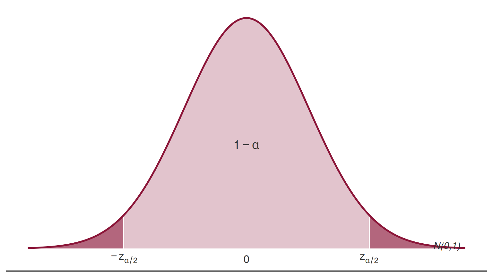
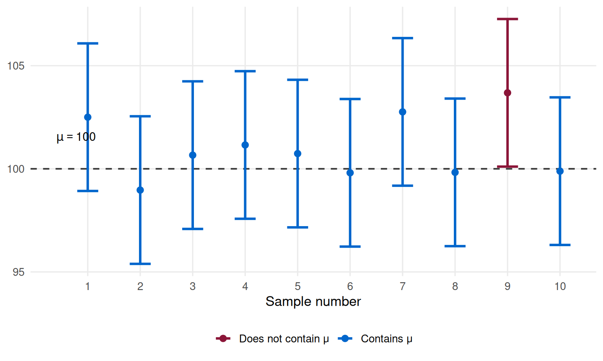

Interval Estimation — Part 1
Lisbon Accounting and Business School — Polytechnic University of Lisbon
Interval Estimation
Interval Estimation — Part 1
Topics covered
Confidence Intervals — General Concepts
Confidence Interval for the Population Mean, \(\mu\), of Normal Populations
Reference: Newbold, P., Carlson, W., & Thorne, B. — Statistics for Business and Economics, Global Ed.
1) Confidence Intervals — General Concepts
Confidence Intervals — General Concepts
Definition
Once a random sample has been drawn from the population, interval estimation yields an interval that, with a specified degree of confidence, contains the true (unknown) parameter (interval estimate for a parameter \(\theta\)).
Confidence Intervals — General Concepts
Methodology for constructing a confidence interval:
Find a “good” point estimator;
Establish a confidence level (most common: 90%, 95%, and 99%);
Know the sample size;
Know the sampling distribution of the estimator.
Confidence Intervals — General Concepts
In choosing the estimator, the Pivotal Variable Method should be followed.
According to this method, the pivot statistic (or pivotal variable):
Must contain the parameter to be estimated in its expression;
Its sampling distribution (exact or approximate) must not depend on the parameter, nor on any other unknown quantity.
2) CI for the Population Mean, \(\mu\)
Confidence Interval for \(\mu\) — Overview
Case 1 — Normal population, \(\sigma\) known
Case 2 — Normal population, \(\sigma\) unknown
Case 1: Normal Population and \(\sigma\) Known
Case 1 — Normal Population and \(\sigma\) Known
Consider a random sample \(X_1, X_2, \ldots, X_n\), \(n \in \mathbb{N}\), drawn from a population \(X\) with distribution \(N(\mu, \sigma)\), where \(\sigma\) is known.
\[\underbrace{\mu}_{\text{parameter}} \;\longrightarrow\; \underbrace{\bar{X}}_{\substack{\text{point} \\ \text{estimator}}} \;\longrightarrow\; \underbrace{Z = \dfrac{\bar{X} - \mu}{\sigma / \sqrt{n}} \sim N(0,1)}_{\text{pivot statistic}}\]
Case 1 — Setting Up the Probability Statement

\[P\!\left(-z_{\alpha/2} < Z < z_{\alpha/2}\right) = 1 - \alpha\]
Confidence attributed to the interval: \((1 - \alpha) \times 100\%\)
Case 1 — Deriving the Confidence Interval
\[P\!\left(-z_{\alpha/2} < Z < z_{\alpha/2}\right) = 1-\alpha\]
\[\Updownarrow\]
\[P\!\left(-z_{\alpha/2} < \frac{\bar{X}-\mu}{\sigma/\sqrt{n}} < z_{\alpha/2}\right) = 1-\alpha\]
\[\Updownarrow \quad \cdots\]
\[P\!\left(\underbrace{\bar{X} - z_{\alpha/2}\frac{\sigma}{\sqrt{n}}}_{T_1} < \mu < \underbrace{\bar{X} + z_{\alpha/2}\frac{\sigma}{\sqrt{n}}}_{T_2}\right) = 1-\alpha\]
Case 1 — The Confidence Interval
The \((1-\alpha)\times 100\%\) confidence interval for \(\mu\) is:
\[\boxed{IC_{(1-\alpha)\times 100\%}(\mu) = \left(\bar{x} - z_{\alpha/2}\frac{\sigma}{\sqrt{n}},\; \bar{x} + z_{\alpha/2}\frac{\sigma}{\sqrt{n}}\right)}\]
where \(t_1 = \bar{x} - z_{\alpha/2}\dfrac{\sigma}{\sqrt{n}}\) and \(t_2 = \bar{x} + z_{\alpha/2}\dfrac{\sigma}{\sqrt{n}}\) are the observed lower and upper bounds.
Case 1 — Random Nature of the Bounds
Different samples yield different values of \(\bar{x}\) and, consequently, different values of the bounds \(t_1\) and \(t_2\).
Therefore, those bounds are realizations of random variables \(T_1\) and \(T_2\), respectively.
The confidence interval is random — it varies from sample to sample. What we compute from our data is one particular realization of that random interval.
Case 1 — Interpretation
Correct Interpretation
If an infinite number of random samples of the same size were drawn, and a \((1-\alpha)\times 100\%\) confidence interval for \(\mu\) were computed from each sample, then \((1-\alpha)\times 100\%\) of those intervals would contain the true value of \(\mu\).
A particular computed interval either contains \(\mu\) or it does not — we just do not know which. The \((1-\alpha)\times 100\%\) refers to the long-run coverage of the procedure.
Case 1 — Visualization of Coverage

Case 1 — Properties of the CI
\[IC_{(1-\alpha)\times100\%}(\mu)=\left(\bar{x} - z_{\alpha/2}\frac{\sigma}{\sqrt{n}},\; \bar{x} + z_{\alpha/2}\frac{\sigma}{\sqrt{n}}\right)\]
The interval is symmetric: the midpoint equals the point estimate \(\bar{x}\), and \(\sigma_{\bar{X}} = \sigma/\sqrt{n}\) is the standard error of the estimator \(\bar{X}\).
The estimation error is the maximum error committed:
\[|\bar{X} - \mu| < z_{\alpha/2}\frac{\sigma}{\sqrt{n}} \quad \longleftarrow \text{estimation error}\]
Case 1 — Width of the Interval
\[IC_{(1-\alpha)\times100\%}(\mu)=\left(\bar{x} - z_{\alpha/2}\frac{\sigma}{\sqrt{n}},\; \bar{x} + z_{\alpha/2}\frac{\sigma}{\sqrt{n}}\right)\]
Confidence level \(\uparrow\) \(\Rightarrow\) width increases \(\Rightarrow\) inference becomes less precise (and vice versa).
Variance \(\uparrow\) \(\Rightarrow\) width increases, because the standard error of the estimator increases.
Sample size \(\uparrow\) \(\Rightarrow\) width decreases \(\Rightarrow\) inference becomes more precise.
Case 1 — A Practical Note
\[IC_{(1-\alpha)\times100\%}(\mu)=\left(\bar{x} - z_{\alpha/2}\frac{\sigma}{\sqrt{n}},\; \bar{x} + z_{\alpha/2}\frac{\sigma}{\sqrt{n}}\right)\]
It is not guaranteed that constructing a CI always produces useful information. It is necessary to strike a balance between:
- the sample size,
- the confidence level, and
- the precision of the interval.
Case 1 — Application Exercise
Application Exercise — Setup
Consider a population with a Normal distribution and known standard deviation \(\sigma = 20\).
A random sample of size \(n = 20\) was drawn, yielding a sample mean \(\bar{x} = 320\).
Find the 90% confidence interval for the population mean.
Application Exercise — Conditions (Case 1)
We are in the conditions of Case 1 (Normal population, \(\sigma\) known):
\[X \sim N(\mu,\; \sigma = 20), \qquad n = 20, \qquad \bar{x} = 320\]
The pivot statistic is:
\[Z = \frac{\bar{X} - \mu}{\sigma / \sqrt{n}} \sim N(0, 1)\]
Application Exercise — Finding \(z_{\alpha/2}\)
The confidence interval to use is:
\[IC_{(1-\alpha)\times100\%}(\mu) = \left(\bar{x} - z_{\alpha/2}\frac{\sigma}{\sqrt{n}},\; \bar{x} + z_{\alpha/2}\frac{\sigma}{\sqrt{n}}\right)\]
We want 90% confidence \(\Rightarrow\) \(1 - \alpha = 0.90\) \(\Rightarrow\) \(\alpha = 0.10\).
We have \(\bar{x}\), \(\sigma\), and \(n\). We still need \(z_{\alpha/2}\).
For the most common confidence levels (90%, 95%, …), the values of \(z_{\alpha/2}\) are tabulated (Table 5).
Looking at the table, for \(\alpha = 0.10\):
\[z_{\alpha/2} = z_{0.05} = 1.645\]
Application Exercise — Result
Substituting all values into the CI formula:
\[IC_{90\%}(\mu) = \left(320 - 1.645 \times \frac{20}{\sqrt{20}},\; 320 + 1.645 \times \frac{20}{\sqrt{20}}\right)\]
90% Confidence Interval for \(\mu\)
\[IC_{90\%}(\mu) = (312.64\;;\; 327.36)\]
Application Exercise — Interpretation
\[IC_{90\%}(\mu) = (312.64\;;\; 327.36)\]
The particular interval \((312.64\;;\; 327.36)\) is a 90% confidence interval for the true value of \(\mu\).
This means: if we were to construct confidence intervals from many different samples of the same size, 90% of them would effectively contain the population mean \(\mu\).
Case 2: Normal Population and \(\sigma\) Unknown
Case 2 — Normal Population and \(\sigma\) Unknown
Consider a random sample \(X_1, X_2, \ldots, X_n\), \(n \in \mathbb{N}\), drawn from a population \(X\) with distribution \(N(\mu, \sigma)\), where \(\sigma\) is unknown.
\[\underbrace{\mu}_{\text{parameter}} \;\longrightarrow\; \underbrace{\bar{X}}_{\substack{\text{point} \\ \text{estimator}}} \;\longrightarrow\; \underbrace{T = \dfrac{\bar{X} - \mu}{S' / \sqrt{n}} \sim t_{(n-1)}}_{\text{pivot statistic}}\]
where \(S'\) is the corrected sample standard deviation.
Case 2 — Setting Up the Probability Statement
\[P\!\left(-t_{\alpha/2} < T < t_{\alpha/2}\right) = 1-\alpha \qquad \text{(confidence: }(1-\alpha)\times 100\text{\%)}\]
Case 2 — The Confidence Interval
The \((1-\alpha)\times 100\%\) confidence interval for \(\mu\) is:
\[\boxed{IC_{(1-\alpha)\times 100\%}(\mu) = \left(\bar{x} - t_{\alpha/2}\frac{s'}{\sqrt{n}},\; \bar{x} + t_{\alpha/2}\frac{s'}{\sqrt{n}}\right)}\]
where \(t_{\alpha/2}\) is the critical value from the \(t_{(n-1)}\) distribution.
All properties derived for the CI in Case 1 (see earlier slides) apply equally here: the interval is symmetric, and its width increases with the confidence level and variance, and decreases with the sample size.
Case 2 — Application Exercise 1
Exercise 1 — Setup
Based on a random sample of \(n = 16\) observations from a Normal population, the following 90% confidence interval for the expected value was constructed:
\[(7.398\;;\; 12.602)\]
Given that \(s' = 3.872\), determine the confidence level that can be attributed to this interval.
(a) 98% (b) 99% (c) Between 98% and 99%
Exercise 1 — Conditions (Case 2)
Conditions: Case 2 — Normal population, \(\sigma\) unknown.
\[X \sim N(\mu, \sigma\!=\!?\,), \qquad n = 16, \qquad s' = 3.872\]
Pivot statistic: \(\;T = \dfrac{\bar{X} - \mu}{S'/\sqrt{n}} \sim t_{(n-1)} \equiv t_{(15)}\)
Exercise 1 — Finding \(t_{\alpha/2}\)
The interval given is:
\[IC_{(1-\alpha)\times100\%}(\mu) = (7.398\;;\; 12.602)\]
Its width is:
\[h = 12.602 - 7.398 = 5.204\]
The width of the CI can also be expressed as:
\[h = 2 \times t_{\alpha/2}\frac{s'}{\sqrt{n}}\]
Exercise 1 — Solving for \(t_{\alpha/2}\)
Setting the two expressions for \(h\) equal:
\[2 \times t_{\alpha/2}\frac{s'}{\sqrt{n}} = 5.204 \;\Rightarrow\; t_{\alpha/2} = \frac{5.204 \times \sqrt{n}}{2 \times s'}\]
\[t_{\alpha/2} = \frac{5.204 \times \sqrt{16}}{2 \times 3.872} = \frac{5.204 \times 4}{7.744} = 2.688\]
From the \(t\)-Student table (Table 7, row for 15 d.f.):
\[\underset{{\scriptstyle\text{area}=0.01}}{2.602} \;<\; 2.688 \;<\; \underset{{\scriptstyle\text{area}=0.005}}{2.947}\]
Exercise 1 — Conclusion
\[\underset{{\scriptstyle\text{area}=0.01}}{2.602} < 2.688 < \underset{{\scriptstyle\text{area}=0.005}}{2.947}\]
\[0.005 < \frac{\alpha}{2} < 0.01 \;\Leftrightarrow\; 0.01 < \alpha < 0.02 \;\Leftrightarrow\; 0.98 < 1-\alpha < 0.99\]
The confidence level of the given interval lies between 98% and 99%.
The correct answer is (c).
Case 2 (continued): \(\sigma\) Unknown and \(n > 30\)
Case 2 — Large Samples (\(n > 30\))
Consider a random sample \(X_1, X_2, \ldots, X_n\), \(n \in \mathbb{N}\) and \(n > 30\), from a population \(X \sim N(\mu, \sigma)\) with \(\sigma\) unknown.
\[\underbrace{\mu}_{\text{parameter}} \;\longrightarrow\; \underbrace{\bar{X}}_{\substack{\text{point} \\ \text{estimator}}} \;\longrightarrow\; \underbrace{Z = \dfrac{\bar{X} - \mu}{S' / \sqrt{n}} \;\dot{\sim}\; N(0,1)}_{\text{pivot statistic (approx.)}}\]
The pivot statistic no longer follows a \(t_{(n-1)}\) distribution — it follows an approximately \(N(0,1)\) distribution.
Case 2 — Large-Sample CI (\(n > 30\))
The approximate \((1-\alpha)\times 100\%\) confidence interval for \(\mu\) is:
\[IC_{(1-\alpha)\times 100\%}(\mu) \approx \left(\bar{x} - z_{\alpha/2}\frac{s'}{\sqrt{n}},\; \bar{x} + z_{\alpha/2}\frac{s'}{\sqrt{n}}\right)\]
Note: When \(n > 30\) and \(\sigma\) is unknown, the corrected sample standard deviation \(s'\) is used in place of \(\sigma\), and the standard normal critical value \(z_{\alpha/2}\) replaces the \(t_{\alpha/2}\) critical value. The resulting interval is approximate.
Case 2 — Application Exercise 2
Exercise 2 — Setup
Using the same sample from Exercise 1 (\(n = 16\), \(s' = 3.872\), CI at 98%: \((7.398\;;\;12.602)\)):
What sample size should be collected (assuming \(s'\) does not change) so that the width of the CI is reduced by half?
Exercise 2 — Initial Analysis
Current width: \(h = 5.204\)
New target width: \(h' = h/2 = 5.204/2 = 2.602\)
Increasing precision while keeping all other conditions constant requires a larger sample. We assume \(n > 30\), so the pivot becomes approximately \(N(0,1)\).
Exercise 2 — Solving for \(n\)
The approximate CI for \(\mu\) becomes:
\[IC_{98\%}(\mu) \approx \left(\bar{x} - z_{\alpha/2}\frac{s'}{\sqrt{n}},\; \bar{x} + z_{\alpha/2}\frac{s'}{\sqrt{n}}\right)\]
The new width satisfies:
\[h' = 2 \times z_{\alpha/2}\frac{s'}{\sqrt{n}} \;\Rightarrow\; 2.602 = 2 \times \underset{\substack{\uparrow \\ \text{Table 5},\; \varepsilon = 0.02}}{2.326} \times \frac{3.872}{\sqrt{n}}\]
\[\sqrt{n} = \frac{2 \times 2.326 \times 3.872}{2.602} \approx 6.92\]
\[n \geq (6.92)^2 \;\Rightarrow\; \boxed{n = 48}\]
Exercise 2 — Conclusion
Required Sample Size
To reduce the width of the 98% CI by half (from 5.204 to 2.602), while keeping \(s' = 3.872\) unchanged, a sample of \(n = 48\) observations must be collected.
Note that the assumption \(n > 30\) is satisfied (\(48 > 30\)), validating the use of the normal approximation.
Summary — Case 1 vs. Case 2
| Case 1 | Case 2 (\(n \leq 30\)) | Case 2 (\(n > 30\)) | |
|---|---|---|---|
| Population | \(N(\mu, \sigma)\) | \(N(\mu, \sigma)\) | \(N(\mu, \sigma)\) |
| \(\sigma\) | Known | Unknown | Unknown |
| Pivot | \(Z \sim N(0,1)\) | \(T \sim t_{(n-1)}\) | \(Z \;\dot{\sim}\; N(0,1)\) |
| Critical value | \(z_{\alpha/2}\) | \(t_{\alpha/2}\) | \(z_{\alpha/2}\) |
| SE | \(\sigma/\sqrt{n}\) | \(s'/\sqrt{n}\) | \(s'/\sqrt{n}\) |
| Interval | Exact | Exact | Approximate |

Statistics II — Interval Estimation